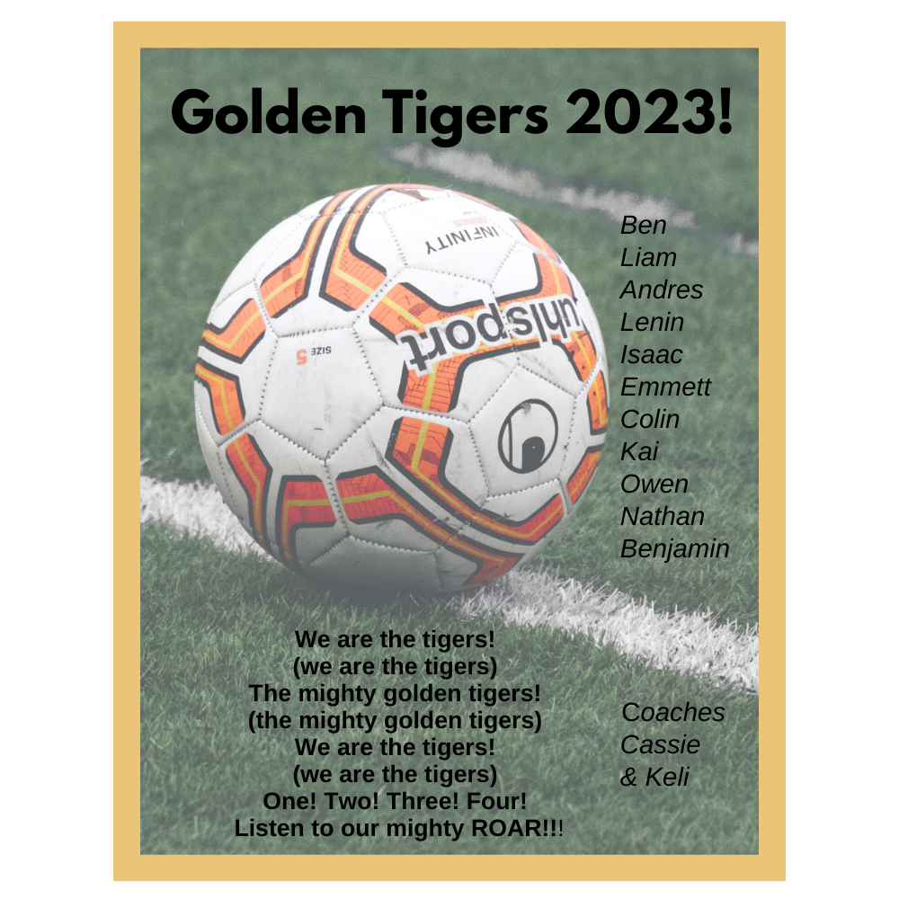

What is Google Bard?
Google Bard is a generative AI tool that reads models containing structured data and generates conversational summaries, images, and suggestions.
This is where I describe what Google Bard is, its history, how it compares to other generative AI tools, it's parts, and much much more.
This is where I describe how Google Bard works -- you, know, the technical description stuff. And I break it down, offering a couple of visuals, such as the waterproof vinyl sticker I made for his soccer team featuring the team cheer. And no, this was not AI generated. This is Rebekka's quick, clumsy Canva design.
